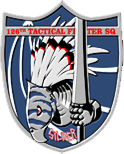
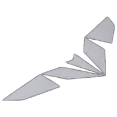

Mage Squadron
Leader :
- Clown (Mage 1)
- AWACS Sky Keeper
Mage Squadron, officially the 508th Tactical Fighter Squadron, is an Osean Air Force unit assigned to
the International Union Peacekeeping Force. The squadron saw deployment in the Lighthouse War.
History
On May 15, 2019, the Kingdom of Erusea declared war on the Osean Federation and attacked the
country's bases all over Usea, including Fort Grays. Mage Squadron was scrambled with other allied
squadrons to repel the Erusean air raid.
The squadron also took part in halting the Erusean advance at the Scofields Plateau. During the
operation, Erusean forces deployed multiple MQ-99s to engage the Osean aircraft, however, they were
shot down by Golem and Mage Squadrons.
On May 30, 2019, Mage Squadron took part in Operation Dual Wielder, where its objective was to help
secure air superiority in the airspace over the Chopinburg Rainforest. The mission was almost a
success, however, Erusea deployed an Arsenal Bird to quickly regain control of the region.[4]
The last known sortie the squadron was involved in was Operation Lighthouse Keeper, where Osean
forces had to infiltrate the city of Selatapura and rescue the Osean ex-president Vincent Harling
from the Erusean-controlled International Space Elevator. The operation failed when Harling's
transport helicopter was shot down and exploded, killing the ex-president. Trigger was blamed for
killing the president, and was later court-martialed and sent to a penal air unit, Spare Squadron.
Strider Squadron
Leader :
- Unnamed pilot (Strider 1)
- Trigger (Strider 1)
- AWACS Long Caster
Member(s) :
- Count (Strider 2)
- Skald (Strider 3)
- Jaeger (Strider 3)
- Lanza (Strider 4)
- Huaxian (Strider 4)
Strider Squadron, officially the 124th Tactical Fighter Squadron, and also referred to as the
"Snowbirds", was a unit in Osean Air Defense Force's Long Range Strategic Strike Group (LRSSG).
Throughout the Lighthouse War, Strider Squadron became renowned for its many accomplishments, most notably
defending Stonehenge and bringing down Arsenal Bird Liberty. Strider's actions often decided the outcome of
many battles during the war.
Strider Squadron was the player's squadron throughout the latter half of Ace Combat 7: Skies
Unknown.
History
Following a reconnaissance mission to the Stonehenge ruins, Strider and Cyclops squadrons' return route
changed to Yinshi Valley due to unknown factors. Shortly before entering the valley, they came under pursuit
by Erusean MQ-99s, and Spare Squadron was deployed to cover their retreat. With Trigger acting as the rear
guard, all Strider aircraft successfully exited the combat airspace. Following Trigger's engagement with
Mister X, AWACS Bandog guided the LRSSG back to the 444th Air Base.
New Leadership
Following Operation Full House, Trigger, alongside his wingman Count, was transferred to the LRSSG under the
request of Wiseman and was appointed the new flight lead of Strider Squadron.
On August 10, 2019, aiming to weaken the Erusean Royal Navy, the LRSSG carried out a strategic strike on the
Erusean forces stationed at Snider's Top. During the operation, Strider played a key role in sinking the Njord
Fleet and destroying both military platforms. Initially, Strider's original members were skeptical of
Trigger's leadership, however, after witnessing his skill during the operation, they wholly accepted their new
leader. It was during the operation that Strider was first referred to as the "Snowbirds".
Counter Attack
Nine days later, Strider played a key role in defending the last remaining Stonehenge turret as it prepared to
fire upon Arsenal Bird Liberty. After the railgun's spotter was rendered ineffective, Trigger, alongside
Wiseman, crippled Liberty by destroying its main propellors, allowing Stonehenge to shoot it down.
In the following operation, Operation Magic Spear, Strider alone was tasked with assisting Osean bombers in
destroying Erusean IRBM silos by guiding the bombers' munitions to their targets. After destroying the main
silos, it was revealed that Erusea had been hiding multiple IRBMs underneath a dam and subsequently launched
the. Trigger ultimately shot down each missile before they reached critical altitude.
Galm Team
Leader :
- Chiper (Galm 1)
- AWACS Eagle Eye
Member(s) :
- Larry Foulke (Galm 2)
- Patrick James Beckett (Galm 2)
The 66th Air Force Unit "Galm", more commonly referred to as Galm Team, was a mercenary fighter squadron
employed by the Ustio Air Force's 6th Air Division during the Belkan War. The two-man unit―comprised of a
pilot known only by his callsign, "Cipher", and Larry Foulke―was stationed at Valais Air Base.
Over the course of the war, Galm Team shot down a considerable number of the Belkan Air Force's ace squadrons
and pilots. The mercenary team's unparalleled combat efficiency proved highly advantageous to the Allied
Forces during the war and decisively ended the postwar uprising orchestrated by A World With No Boundaries.
History
The specific details regarding Galm Team's creation are currently unknown. It is known that Larry Foulke
(callsign, "Pixy") was employed by Ustio's foreign mercenary air division as early as 1994. Details
concerning Cipher's recruitment remain unknown, though it can be surmised that he and Foulke were not
introduced until their first combat sortie, during which they were designated Galm 1 and 2 respectively.
Galm Team's first known combat sortie occurred on April 2, 1995, when it was dispatched to intercept a Belkan
bombing strike on Valais Air Base. Galm's successful defense of Valais ultimately prevented Belka from
achieving complete hegemony over Ustio. Nearly two weeks later, Galm Team supported the Allied Forces'
counteroffensive preparations by securing a military supply line along Route 171 in northern Sapin. On
April 20, Galm Team underwent its first assignment within Area B7R. Although Galm's deployment was only
intended to be a diversion to conceal the Allies' mobilization, the two mercenaries shot down all of the
Belkan aircraft tasked with defending the airspace, including several ace squadrons.
At 1458hrs, Foulke radioed through the electromagnetic interference and informed Cipher that he had "found a
reason to fight"—he then proceeded to open fire on his flight leader. Cipher avoided his missile-fire and
became entangled with several Belkan fighters, allowing Foulke to slip away in the confusion. Before
departing, Foulke informed Cipher that the two of them must "go our separate ways." With Pixy listed as
MIA, Crow Team's number three, Patrick James Beckett (callsign "PJ"), was reassigned to serve as Galm's number
two.
End of the War
One week later, on June 13, Cipher and PJ were dispatched to engage the Belkan remnant forces massing near
Mount Schirm. During the operation, Galm spotted an immense, empty hangar at a facility near the mountain, and
PJ reported their findings back to Eagle Eye. The following week, Galm flew to Belka's northeast coast of
Anfang to eliminate the remaining Belkan resistance forces. Although the operation was a success, the overall
strength of the Belkan forces Galm Team encountered led PJ to surmise that they were not part of any remnant
resistance movement, and that the "war [was] not over yet."
On December 25, the terrorist organization A World With No Boundaries used the commandeered XB-0 Hresvelgr
gunship to launch surprise attacks on the city of Lumen and Valais Air Base. Despite damage to the base
facilities and runway, Galm Team took off in pursuit of the XB-0 and eventually intercepted it over the
Waldreich Mountains. The gunship's fighter escorts, which included Espada Team, engaged Galm but were
ultimately shot down. Cipher proceeded to disable the XB-0's engines and numerous anti-aircraft weapons,
rendering the gunship defenseless. The ultimate destruction of its cockpit caused the XB-0 to lose altitude
and crash. Pixy, who had since fallen in with the terrorist group, then relayed a coded transmission to
Galm Team, which PJ deciphered: "Yo, Buddy. You still alive?"
Six days later, on December 31, Galm Team was dispatched to Mund Valley in central Belka, where A World With
No Boundaries had taken control of the Avalon Dam facility and its V2 warhead. In order to expedite its
arrival at the target area, Galm embarked on a course that took it through Area B7R once more. Upon entering
the airspace, Cipher and PJ were engaged by several ace squadrons from the terrorist group, including Gault
Team, which was led by A World With No Boundaries' (supposed) leader, Anton Kupchenko. After a heated
dogfight, Cipher downed the enemy fighters, and Galm continued on towards Mund.
After arriving at the operation airspace, Galm and several other Allied squadrons approached the dam facility
at low altitude through the river valley, while other Allied aircraft overhead drew fire from the dam's
anti-aircraft defenses. Upon reaching the dam, Cipher flew into the facility's subterranean tunnels and
destroyed the three modules controlling the V2 launch. As Cipher and PJ prepared to depart, Pixy―piloting
an advanced ADFX-02 Morgan―appeared and opened fire with his fighter's Tactical Laser System, hitting and
killing PJ. Pixy then radioed Cipher, asking if he had "found a reason to fight yet" and began to
reactivate the V2 launch sequence. The two mercenaries fought over Avalon, with Cipher slowly stripping the
Morgan of its weaponry until Foulke activated the aircraft's ECM shielding. However, Cipher landed several
hits on the Morgan's forward air intakes, injuring Foulke and forcing him to eject.
Following this final confrontation, Cipher effectively vanished from official records. Foulke is known to have
survived his injuries and later returned to service as a soldier for hire in Usea.
Sol Squadron
Leader :
- Mihaly A. Shilage (Sol 1)
Member(s) :
- Wit (Sol 2)
- Seymour (Sol 3)
- Hermann (Sol 4)
- Roald (Sol 5)
Sol Squadron, officially the 68th Experimental Squadron, is an experimental unit serving with the
Erusean Air and Space Administration. The squadron saw deployment during the Lighthouse War. It was featured
as the main antagonist squadron for most of the campaign of Ace Combat 7: Skies Unknown.
Mihaly A. Shilage, the squadron's leader, accepted his Erusean status but the other Sol pilots continued to
wear the Voslagian Air Force emblem on their flight suits. After Mihaly was shot down, Sol Squadron flew
alongside the Long Range Strategic Strike Group during Operations Daredevil and Hush.
History
At the onset of the war, Sol Squadron was formed to support Mihaly on his combat sorties. On May 30, 2019,
Mihaly flew solo during Osea's Operation Dual Wielder to check on the Erusean drones deployed on the front
lines. He shot down Gargoyle 1 and Golem 2 before retreating from the airspace. The combat physically strained
him, so the squadron did not deploy again for over a month.
On July 12, Mihaly, Wit, and Seymour joined a formation of Erusean drones chasing the Osean reconnaissance
squadrons Cyclops and Strider away from Stonehenge. The three Sol pilots reached them in Yinshi Valley, where
Spare Squadron was attempting to escort Cyclops and Strider. Mihaly engaged and killed Spare 8 as well as
another Spare pilot and one recon pilot before Trigger engaged him in a dogfight through the valley. Tabloid
engaged Wit and Seymour simultaneously to prevent them from chasing Trigger or the other Oseans. All of Sol
Squadron eventually retreated from the area after heavy thunderclouds continued to roll in.
The squadron remained grounded for another two months while Dr. Schroeder ordered a new flight suit for Mihaly
to support his flying style. Schroeder was instantly amazed by Mihaly's control on his aircraft while using
the new suit; the other Sol members couldn't keep up with their leader.
Osea launched a large-scale invasion of Erusea's capital, Farbanti, on September 19. Erusea called on the
entirety of Sol Squadron to provide backup; the squadron arrived after Osea had already captured the majority
of Farbanti's territory. Mihaly managed to sink multiple Osean ships, prompting Osean headquarters to order
Cyclops and Strider Squadrons to shoot him down. Trigger and Wiseman jointly engaged Mihaly after he shot down
Fencer. Wiseman drew Mihaly through Farbanti's submerged district until Mihaly killed him. Trigger continued
to engage Mihaly, but Mihaly and the rest of Sol Squadron retreated after both sides lost communications,
leaving Farbanti in Osean hands.
After the collapse of Erusea's government, Sol Squadron chose to desert from Erusea and instead defend
refugees amassed at Shilage and Voslage; the squadron reformed itself as part of the Voslagian Air Force. When
Strider Squadron arrived on October 24 to secure Shilage's stockpiled supplies for themselves, Sol deployed
and attempted to defend the area. Trigger shot down Roald and Hermann—their subsequent fates are left
unexplored—before Mihaly arrived in an experimental X-02S Strike Wyvern. Mihaly ordered Wit and Seymour to
leave and stay alive for the sake of their homeland. Trigger engaged Mihaly in an extended dogfight until
Trigger finally shot him down. Mihaly asked on an open channel for Trigger to "put a stop to the drone
production" before his radio cut out; he survived his injuries but was crippled and could no longer fly.
One week later, Avril Mead put out a call for those looking to end the war to help retake the International
Space Elevator from Erusean radicals. Wit and Seymour responded under the Voslagian flag to support the Oseans
and Eruseans fighting the radicals. The two proved useful to their former rivals; they revealed that Erusea's
drones were flying in slave mode alongside radical pilots, and Wit provided a way to destroy the Arsenal Bird
by explaining where to attack it. After two ADF-11F Ravens entered the airspace to shoot down the coalition
forces, Wit and Seymour retreated to a friendly airbase until the coalition returned the next day. The two
pilots joined the others in fighting the Ravens, observing that they flew precisely like Mihaly.
Seymour always survives the final battle against the Ravens, but Wit's fate depends on the player. If the
player manages to shoot down both Ravens at around the same time, Wit will survive the fight. Otherwise, the
second Raven will shoot down Wit, prompting Seymour to attempt to avenge him during the fight with the first
ADF-11.
SACS
Member(s) :
- Louis Barbieri
- And 23 others
SACS, also known as the Alicorn Squadron, was the Erusean Navy air group from the submarine Alicorn, which saw
deployment near the end of Operation Sighthound and during Operation Fisherman. The squadron launched via an
aircraft deck on the top of the submarine's hull. The tail of SACS aircraft bore a design of an alicorn.
In line with the radical ideology of their captain, Matias Torres, SACS seemed to display a fanatical devotion
to their cause. A flight launched purely as a distraction did so willingly and shouted "salvation" just before
their aircraft exploded.
History
At the climax of Operation Sighthound, Torres announced that both he and the Alicorn were no longer under
Erusean authority. After launching the submarine and destroying an OMDF fleet led by the OFS Puffin, Torres
launched a flight from the SACS unit, diverting the attention of Osea's fighter squadrons away from the
Alicorn as it submerged. One of the SACS aircraft carried a cruise missile armed with a WMD. Trigger pursued
the flight and shot the plane down before it could leave the area of operation and carry out the flight's
mission.
The remaining aircraft of the squadron would launch days later on September 14, when the Osean Navy tried to
trap the submarine in the Spring Sea. Initially operating as interceptors alongside the Alicorn's detachment
of SLUAVs, SACS engaged Specter Squadron in an attempt to shoot down their fleet of P-1 patrol aircraft to
cover the submarine's escape, but this attempt failed when the LRSSG successfully defended Specter. After the
Alicorn was forced to surface, the remaining aircraft of SACS were launched from the submarine, once again
alongside SLUAVs, this time as a distraction to try to prevent the LRSSG from destroying the Alicorn.
Ultimately, SACS failed to prevent the LRSSG from destroying the submarine, resulting in the loss of all on
board.
Silber Team

Member(s) :
- Ruppert Appling
- Stefan Enders
- Sven Burtlag
- Sebastian Hackenberg
The 126th Tactical Fighter Squadron "Silber" was an squadron of the Belkan Air Force. Known for a
history of military victories and successes, Silber was one of the oldest known squadrons of the
BAF.
History
Originally named the "105th Tactical Fighter Squadron", the current Silber Squadron was born when Dietrich
Kellerman was assigned to the team around 1973. The "first season Silber Team" (as Kellerman's original
formation was retroactively called) fought in the Rectan Conflict in the same decade, defeating the Rectan Air
Force in an engagement over the Mainz Mountains and allowing the Belkan Army to capture the Rectan capital of
Cor.
In 1985, the unit became involved in the Wellow Incident, destroying several unknown aircraft that flew over
Crescene Island in North Belka. Five years later, in 1990, Dietrich retired from the Belkan Air Force, leaving
the Silber team (the "second season Silber team") to continue without him.
Belkan War
When the Belkan War broke out in 1995, Kellerman was called back to the frontlines to bolster troop morale. He
returned to active duty with several pilots from the 9th Special Education Course, the "Kellerman
Institution", giving birth to the third iteration of the Silber Squadron.
In their last combat action, the reformed Silber Squadron was sent as reinforcements during the Second Battle
of B7R in May 28. The unit was engaged by the 66th Air Force Unit "Galm", and was completely destroyed.
Kellerman survived. Dubbed the "squadron of tragedy", the battle saw the death of most of the team's pilots,
causing Kellerman to permanently retire from aviation.
Garuda Team
Garuda Team, officially the 28th Fighter Squadron, is a squadron in the Republic of Emmeria Air Force's
Eastern Air Region Air Defense. It serves in the REAF's 8th Air Division, and is stationed at Gracemeria Air
Force Base.
During the Emmeria-Estovakia War, Garuda Team became invaluable to the Emmerian war effort as it helped decide
the outcome of many crucial battles during the war, forcing Estovakia's armed forces to dedicate entire
operations to the destruction of the squadron. Garuda's renown resulted in its members becoming national
heroes for the Emmerian people and helping Emmeria emerge victorious in the war.
Garuda Team is the player's squadron throughout Ace Combat 6: Fires of Liberation.
History
Garuda Team was formed in 2013 upon Talisman's assignment to the Eastern Air Defense Division. The squadron
was tasked with defending Gracemeria, Emmeria's capital city, from any possible attack. Until mid-2015, the
squadron was solely comprised of Talisman.
On August 30, 2015, Estovakia launched their invasion of Gracemeria. During the emergency scramble, AWACS
Ghost Eye assigned Marcus Lampert, callsign Shamrock, to the squadron as Talisman's wingman.
Garuda Team, along with the rest of the Emmerian forces, fought valiantly to defend Gracemeria. They nearly
drove out the Estovakian invaders, but were forced to retreat after the P-1112 Aigaion wiped out large
portions of the defending forces and the elite Strigon Team entered the battle. During the retreat, one of
Garuda's pilots managed to damage Strigon Leader Victor Voychek's aircraft; he was forced to eject, injuring
his legs in the process and ending his flight career.
After the loss of major cities and key locations to Estovakian forces, Garuda Team was forced to retreat to
Khesed Island, an island to the west of the Emmerian mainland. They regrouped there with other Emmerian forces
to make a stand against Estovakia's invasion.
On November 24, Estovakia sent a squadron of bombers to destroy Vitoze and the Emmerian forces stationed
there. Garuda Team was sent up with other air squadrons to defend the city from the approaching bombers. They
were successful in this operation, allowing Emmeria to begin drafting plans for a counterattack.
Three days later, Emmerian forces began their counterattack. They aimed to penetrate Estovakia's defensive
line in Sipli Field, leading to the battle of Sipli Field. This was Garuda Team's first operation in which the
squadron supported Emmerian ground troops on multiple fronts. Garuda successfully provided close air support,
allowing the ground troops to retake Sipli.
Garuda Team then participated in the battle of Bartolomeo Fortress a month later, supporting Emmeria's ground
troops as they retook the fortress and regained control of the island. During the battle, two members of
Strigon Team attempted to provide support to the stationed Estovakian troops, but Garuda shot down both
Strigon pilots.
Shamrock, whose legs were damaged in the crash, was confined to a wheelchair until he began physical
rehabilitation, likely grounding him permanently. He visited Melissa Herman's home after the war concluded in
order to meet her and Matilda since their assistance helped them destroy the Chandelier in his final
sortie. It is not known if Talisman retired as well, or still served in Emmeria's Air Force for some time
after the war.
Spare Squadron
Leader :
- Colonel D. McKinsey (Spare 1)
- AWACS Bandog
Member(s) :
- Count (Spare 2)
- Full Band (Spare 6)
- High Roller (Spare 7)
- Champ (Spare 8)
- Tabloid (Spare 11)
- Avril Mead (Spare 14)
- Trigger (Spare 15)
Spare Squadron, officially the 444th Fighter Squadron, is a former penal military unit in the Osean Air
Defense
Force, formerly under the command of Colonel D. McKinsey. The unit is comprised of Osean military personnel
who
have committed some form of crime. Members of this squadron are considered expendable by the Osean Defense
Forces. Following Operation Flush, Spare Squadron was recognized as a legitimate Osean Air Force squadron and
all members were pardoned.
The squadron had no standardized aircraft, but all planes were decorated with "sin lines" on the tails in the
form of white dashes blocking out previous unit decals. The number of marks depended on the severity of the
crime committed. Spare Squadron was first stationed at the 444th Air Base in Zapland and was later transferred
to Tyler Island.
History
Spare Squadron was formed sometime in May 2019 when a concept of the penal unit was proposed by Colonel
McKinsey. In May 17, the prisoners were transported to Zapland where the 444th Air Base was functioned as
their base of operations.
In June 2019, Erusean Air Force bombers fell for the Osean facade and began conducting bombing operations on
the decoy 444th Air Base in Zapland. In order to make the base seem more legitimate, Spare Squadron was
assembled for the sole purpose of deceiving the Erusean military. The squadron was deployed multiple times
during this period.
Following Operation Lighthouse Keeper, Trigger was tried and found guilty of assassinating former President
Vincent Harling and transferred to Spare Squadron. Shortly after his transfer, Erusean bombers started bombing
the base once again, believing the Osean Air Force was concentrated on it. Spare was sent up without access to
their weaponry. During the battle, contact with Colonel McKinsey was lost, prompting AWACS Bandog to allow
Spare access to their weaponry. Trigger almost singlehandedly shot down all bombers shortly afterward.
After arriving back at base, all squadron members were thrown into solitary by Colonel McKinsey for using
weaponry without his permission.
Eight days after the attack on Roca Roja, Spare was tasked with securing a return route for the Long Range
Strategic Strike Group squadrons, Cyclops and Strider. Shortly after the destruction of Erusean ground forces
within Yinshi Valley, both Cyclops and Strider Squadrons entered the airspace while being pursued by MQ-99s.
Almost singlehandedly, Trigger managed to shoot down the drones and protect the Osean aircraft. Following the
destruction of the drones, Champ was suddenly engaged by Mihaly A. Shilage who, after a brief exchange of
maneuvers, shot down and killed him before also downing Spare 10. With the threat of losing more friendlies,
Bandog ordered Trigger and Tabloid to engage the Su-30SM. A dogfight between Trigger and Mihaly ensued,
however, it was cut short as clouds were moving in, prompting Sol Squadron to withdraw.
Following the successful effort of Cyclops and Strider, Spare was thrown into solitary yet again by McKinsey,
due to returning without his permission and "failing as escorts".
Due to their accomplishments, Spare Squadron was now officially recognized as a legitimate unit within the
Osean Air Defense Force and all members were pardoned. The majority of the squadron was ordered to relocate to
Tyler Island, however, Trigger and Count were personally selected by the General Staff Office to escort the
colonel to Bulgurdarest.
On August 5, the majority of Spare Squadron departed from the base and headed west, while McKinsey's
transport, Roper 1, headed north. While heading towards Bulgurdarest, Trigger sought out and destroyed
multiple SAM sites across Erusean territory while Count remained nearby Roper 1. During the mission, multiple
Erusean squadrons approached the transport and were subsequently intercepted and shot down by Trigger and
Count. After crossing the border into Bulgurdarest, Erusean aircraft withdrew, however, an ADFX-10 quickly
approached Roper 1 shortly afterward. With the transport under threat, Bandog ordered Trigger to engage the
aircraft while Count escorted the transport. Despite the ADFX-10's inhuman dog-fighting capabilities, Trigger
shot down the drone. Cyclops Squadron then entered the airspace and guided McKinsey, along with Spare, back to
their base.
On August 10, Trigger and Count were officially transferred to the Long Range Strategic Strike Group.
Believing Tyler Island to have been secured, Spare Squadron and other personnel of the 444th Air Base landed.
However, the airbase had not yet been secured, and so Spare could not provide air support. Following the
breakdown of Erusean and Osean communications network, the island fell into chaos, and Spare was at risk of
attack from both Eruseans defending the island and Oseans mistaking them for a rebelling Osean penal unit.
They would remain isolated on the island until October 10, when the Long Range Strategic Strike Group would
arrive and rescue them.
Three weeks later, they helped escort refugees into the International Space Elevator. However, Tabloid was
crushed by falling debris in the process.
Following the end of the war, they helped provide supplies for refugees at the Space Elevator.
Mimic Squadron

Leader :
- Otto Van Dalsen (Mimic 1)
- Howard Clemens
Member(s) :
- Elke Van Dalsen (Mimic 2)
Mimic Squadron was a mysterious mercenary and assassin unit belonging to GR Guardian Mercenaries. They briefly
appeared in the first two DLC missions for Ace Combat 7: Skies Unknown. Despite bearing Osean emblems, the
squadron was hostile towards both Osean and Erusean forces They were supposedly hired by former Osean
Brigadier General Howard Clemens, to assassinate Trigger.
The squadron was comprised of the van Dalsen siblings: Otto, callsign "Rage"; and Elke, callsign "Scream".
Upon the deaths of both siblings, the squadron is believed to no longer exist.
History
Sometime before September 4, 2019, Osean Brigadier General Howard Clemens supposedly contracted the siblings
to assassinate Trigger.
During Operation Sighthound on September 4, 2019, as the LRSSG's Strider Squadron cleaned up Erusean aircraft
threatening their landing fleet, Mimic Squadron appeared on radar posing as Osean forces. They used Osea's
radio frequencies but did not show proper IFF. This, along with the fact that there were no more scheduled
reinforcements, lead AWACS Long Caster and Wiseman to identify them as hostile. Rage noted the presence of
"Three Strikes" and the duo prepared to attack. Scream downed an Erusean aircraft, earning the ire of Rage.
The siblings bickered before engaging Trigger in a heated dogfight, using their modified aircrafts' ECM
capabilities to create fake targeting boxes and to break their opponents' lock. Ultimately, the siblings were
forced to retreat from the battle. Scream went on an open channel to warn Trigger that they would meet again
and Trigger would die the next time they met.
Six days later, during Operation Domino on September 10, 2019, Mimic appeared at Anchorhead just as the
LRSSG's operation was ending. Armed with stronger ECM and new 'stealth missiles' that didn't trigger missile
alerts, Rage and Scream once again engaged Strider Squadron. Scream damaged Lanza's aircraft with a stealth
missile, forcing him to retreat. Mimic then engaged the remaining two Strider pilots, Count and Trigger.
During the dogfight, their benefactor, Brigadier General Clemens, contacted them and ordered them to withdraw
from the airspace. Both siblings refused to comply and continued to engage Trigger and Count. Despite their
technological advantages, Count switched to a secure line to communicate a plan to Trigger - He would draw
their attention while Trigger dealt the death blow. Count was able to lure the two apart long enough for
Trigger to shoot them both down without them coming to each other's aid. Both pilots refused to eject and died
when their aircraft exploded.